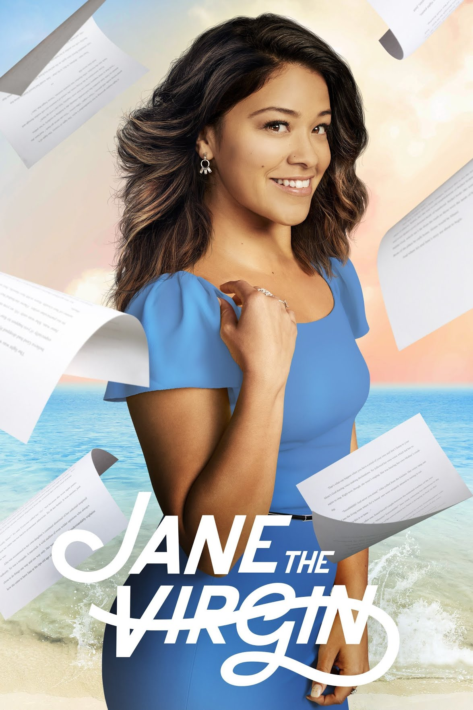

Jane The Virgin

Jane Villanueva's life turns upside down after she gets artificially inseminated. She is in for a greater shock when she discovers that the biological donor is her boss and former crush.

| Year | Seasons | Production |
|---|---|---|
| 2014 | 5 Seasons | NETFLIX |
Cast
- Gina Rodriguez
- Andrea Navedo
- Justin Baldoni
- Yael Grobglas
- Ivonne Coll
- Brett Dier
- Jaime Camil